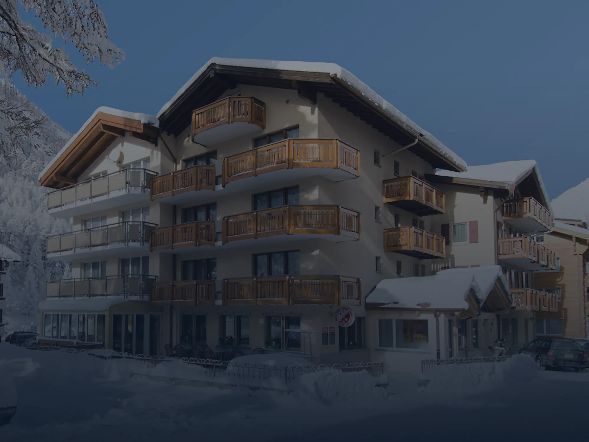
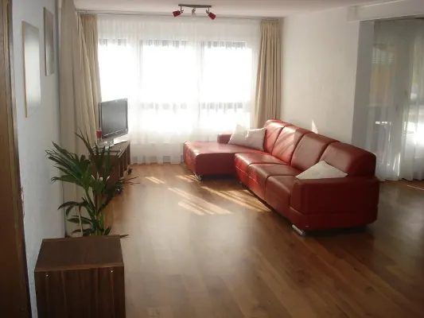

Station 2 · Der Späher · 17.10.2026
Hotel Monte-Moro,gelesen.
Das Haus mit dem Röstihüs in Saas-Almagell, drei Sterne, 18 Zimmer, Gastgeber laut Impressum Esther und Fabian Zurbriggen. Was die heutige Seite zeigt, was ihr fehlt und ob es weitergeht.
01Das Haus in Kürze
Drei Sterne,ein Röstihüs.
Hotel und Restaurant in Saas-Almagell, 18 Zimmer, 55 Betten, drei Sterne. So steht es bei Schweiz Tourismus, Booking und Google.
Dazu gehören das Restaurant Röstihüs, die Ferienwohnungen in den Häusern Apollo und Arizona und weitere Zimmer in der Residence Alpenhof, vier Gehminuten entfernt.
Im Impressum steht «Hotel Monte-Moro, Esther und Fabian Zurbriggen-Zurbriggen». Telefon +41 27 957 10 12, info@monte-moro.ch.
 Das Haus im Sommer
Das Haus im Sommer Ein Doppelzimmer
Ein Doppelzimmer Vom Balkon ins Tal
Vom Balkon ins Tal02Die heutige Seite
Was monte-moro.chheute zeigt.
Alle 49 Seiten in drei Sprachen am 17.10.2026 neu abgerufen. Inhaltlich ist alles wie am 09.10.2026. Die Seite selbst sehen Sie über den Knopf, nicht als Bild.
Joomla, Bauteile der Reihe 3, Aufbau aus Tabellen.
Quelltext der Startseite, 17.10.2026Vorlage «zerone» von der zerone computer gmbh in Brig-Glis, angelegt am 04.04.2019. Ein laufender Betreuungsvertrag ist nicht belegt. Server bei Webland.
templateDetails.xml der Seite, zerone.ch, Namensserver, 17.10.202688 Bilder, die grössten 1280 px breit. Zimmer, Stube und Haus sind eigene Fotos, die Bilder der Region tragen keine Herkunft, die Wellness-Bilder zeigen das Partnerhotel.
_quelle/monte-moro/website/bilderEigene Anordnung mit Menüknopf, der Massstab ist fest auf 0,8 gestellt.
Aufnahmen in _qa, QuelltextStartseite 4,5 bis 5,3 Sekunden am Rechner, 2,0 MB, davon 1,65 MB Bilder. Am Handy 3,6 Sekunden. Gemessen ungedrosselt aus Koh Phangan.
_qa/messung.json, 17.10.2026Deutsch, Englisch, Französisch mit je 16 bis 17 Seiten. Der Datenschutz bleibt in allen drei Sprachen deutsch. Speisekarte deutsch und französisch.
_qa/live, 49 SeitenZimmer über einen eingebetteten Shop von seekda, Tische über TheFork oder Telefon, Anfragen über ein Formular.
monte-moro.ch/de/buchen.htmlImpressum und Datenschutz vorhanden. AGB, Widerruf und Stornobedingungen nicht gefunden.
_qa/live/textInstagram @hotelmonte_moro (173 Follower, 19 Beiträge am 09.10.2026) und Facebook. Newsletter nur als Auswahl im Kontaktformular.
Fuss jeder SeiteKeine eigene. Die Restaurantseite nennt 14 Gault-Millau-Punkte für den Küchenchef des Partnerhotels, Stand nicht geprüft.
monte-moro.ch/de/restaurant.htmlWas die Seite gut macht
Sie sagt klar, was im Preis steckt: Bergbahnen und Postautos inklusive, Gratis-Anreise mit dem öffentlichen Verkehr, das Spa nebenan mit Preis je Eintritt. Die Preisliste ist offen und vollständig, bis zum Hund pro Tag. Die Lage steht in Gehminuten auf der Startseite.
Was auffällt
- Die Gratis-Anreise gilt für Buchungen «vom 1. Mai bis 31. Oktober 2026» und steht in zwei Wochen nicht mehr.
- Die Pauschale «Top Winterzauber» (CHF 999.00, sieben Nächte) nennt weder Saison noch Jahr.
- Das Spa des Partnerhotels steht mit 1700 m² im Sommer, 1000 m² im Winter und an anderer Stelle mit 1100 m² da.
- Der Routenplaner der Seite führt zur Talstrasse 129, Google nennt die Furusandstrasse 12.
- Im Browser heisst die Startseite «Aktuelles», die Seite Aktuelles «Akuelles».

«Es lebe die Tradition!» Startseite des Hauses, Abschnitt Röstihüs
03Was fehlt
Was ein Gastnicht findet.
Die Geschichte
Kein Wort dazu, seit wann es das Monte-Moro gibt und wer es führt, ausser dem Impressum.
Die Zimmer
Eine Bildreihe und zwei Absätze. Keine Kategorie mit Grösse, Bild und Preis. Die Preisliste kennt Budget- und Standardzimmer, die Zimmerseite nicht.
Die Wohnungen
Apollo und Arizona ohne Preis, ohne Grösse, ohne eigenen Buchungsweg.
Das Röstihüs
Keine Öffnungszeiten, keine Ruhetage. Die Karte gibt es nur als PDF.
Die Gäste
Bewertungen werden nirgends gezeigt, obwohl Personal und Lage auf Booking bei 9,0 stehen.
Das Kleingedruckte
Keine AGB, keine Stornobedingungen.
 Das Raclettestübli
Das Raclettestübli Frühstücksbuffet
Frühstücksbuffet04Was das Haus ausmacht
Mehr erleben,weniger zahlen.
So sagt es das Haus selbst. Bergbahnen und Postautos sind im Sommer und Herbst ab der ersten Nacht inbegriffen, das Skigebiet liegt zwei Gehminuten entfernt, die Busstation drei.
Im Röstihüs gibt es nach eigener Angabe 12 Röstis und 7 Cordon Bleus, Walliser Wein, Appenzeller Bier und eine Sonnenterrasse vor dem Haus. Halbpension heisst einmal die Woche Raclette, Kinder haben ihren Club von Montag bis Samstag, 16:30 bis 21:00 Uhr.
Wer mehr will, geht nebenan ins Spa des Partnerhotels Pirmin Zurbriggen: CHF 25 je Eintritt, sieben Tage CHF 150.
05Familie und weitere Häuser
Die anderen Häuserder Familie.
Gleiche Telefonnummer, gleiche Gastgeber im Impressum, «Partnerhotel» auf der Startseite. Gebaut ist von keinem dieser Häuser schon etwas; die drei anderen laufen heute parallel durch Station 2.
 Wellness & Spa Pirmin ZurbriggenFurrusandstrasse 16, Saas-AlmagellEsther und Fabian Zurbriggen
Wellness & Spa Pirmin ZurbriggenFurrusandstrasse 16, Saas-AlmagellEsther und Fabian Zurbriggen Loft-Suite HotelSaas-AlmagellEsther und Fabian Zurbriggen
Loft-Suite HotelSaas-AlmagellEsther und Fabian Zurbriggen Suitenhotel ZurbriggenSchluhmattstrasse 68, ZermattMoni und Pirmin Zurbriggen
Suitenhotel ZurbriggenSchluhmattstrasse 68, ZermattMoni und Pirmin Zurbriggen
Chalet RusticaSaas-AlmagellHeidi und Damian Andenmatten-ZurbriggenIm Handelsregister steht die Resort Monte Moro AG (CHE-167.073.174), gegründet am 22.08.2022 an der Talstrasse 129, Zweck «Betrieb von Hotels und Gastrobetrieben». Einziges Mitglied des Verwaltungsrats ist laut SHAB vom 19.09.2022 Oliver Wachs aus Zürich. Seit März 2026 sitzt die Firma an der Furusandstrasse 10. Die Familie Zurbriggen steht dort nicht, das Impressum nennt weiter Esther und Fabian. Ob die AG das Hotel betreibt, ob es verpachtet oder verkauft ist, bleibt offen.
Zefix, Abruf 17.10.202606Noten
Wie Gästees sehen.
Nur abgelesen. TripAdvisor liess sich heute nicht öffnen, dort gilt der Stand vom 09.10.2026.
121 Bewertungen · 17.10.2026
Booking.com
94 Bewertungen · 17.10.2026
TripAdvisor
17 Bewertungen · Stand 09.10.2026
Booking im Einzelnen
- Personal9,0
- Lage9,0
- Sauberkeit8,8
- Komfort8,7
- Preis-Leistung8,6
- Ausstattung8,0
In welcher Sprache Gäste schreiben
- Deutsch46
- Französisch29
- Niederländisch6
- Italienisch3
- Englisch2
- Rumänisch2
- Weitere sechs6
Booking, 94 Bewertungen, 17.10.2026
07Wer hinter der heutigen Seite steht
zerone aus Brig-Glis,kein Hindernis.
Abgerufen am 17.10.2026. Die Buchung über seekda bleibt, wo sie ist. Alles mit Beleg im Befund als Text.
Zerone Computer GmbH, Brig-Glis, im Handelsregister seit 1999, Gesellschafter Marc und Daniel Burgener aus Saas-Grund. Programmierung, Fernwartung, Webdesign, Drucksachen. Dieselbe Vorlage tragen vier Hotels in Saas-Fee: La Gorge, Boutique Lodge Spycher, Belmont, Ambiente.
Handelsregister Oberwallis, zerone.ch, Quelltext der Seitenzerone baut die Seite mindestens seit Mai 2014 (Web-Archiv). Die heutige Fassung ist von 2019, Joomla 3, für das es seit Februar 2025 keine Sicherheits-Updates mehr gibt. Zuletzt geändert im Mai 2026.
web.archive.org, templateDetails.xml, Dateidaten des ServersNicht öffentlich. «Die aktuellen Preise können bei zerone computer gmbh erfragt werden.» Abgerechnet wird jährlich im Voraus.
AGB Ziffer 2a, 2c, 2dEin Kalenderjahr, verlängert sich von selbst. Kündigung bis spätestens 15. November. Keine Rückvergütung. Nach Vertragsende werden alle Daten gelöscht, die Sicherung ist Sache des Kunden.
AGB «Internet Services», Stand August 2018, Ziffer 3 und 4Die Adresse wird auf den Namen des Kunden registriert. Am Hosting erhält das Haus nur ein Nutzungsrecht, die Rechte bleiben beim Anbieter. Ob zerone Vorlage, Code und Datenbank herausgibt, steht nirgends.
AGB Ziffer 5e und 8a, templateDetails.xmlDer tatsächliche Vertrag der Familie mit zerone: Preis, Umfang, Pflege, Laufzeit. Im Gespräch zu klären, keine Tatsache über das Haus.
nicht öffentlichJoomla 3 ohne Sicherheits-Updates
statischer Bau ohne Joomla und ohne Datenbank hinter der Seite
Tabellen-Aufbau, Handy-Massstab fest auf 0,8
für das Handy zuerst gebaut, flüssig auch auf schwachen Geräten
2 MB auf der Startseite, Bilder höchstens 1280 px
Bilder in voller Quellbreite, leicht ausgeliefert
Datenschutz nur deutsch, keine AGB
alle Rechtstexte im Wortlaut, Sprachwechsel an derselben Stelle
Daten werden bei Kündigung gelöscht
Seite, Server, Adresse und Zugänge auf das Haus, alles zum Mitnehmen
eine Seite als Einzelstück
Werkbank mit Karten, Rezeption im Chat, Drucksachen, Besucherbuch
08Empfehlung
Passt, gehörtzur Familie.
Art: Studie, ungefragt, als Teil der Familie Zurbriggen. Die Seite ist sichtbar älter als das Haus, die Geschichte ist unerzählt, echtes Material liegt bereit, ein Relaunch ist nicht zu sehen.
Drei Sterne
Kein Luxushotel, und trotzdem dabei: Die Familie steht über den Sternen (Robert 17.10.2026). Auf der Familienseite steht es weiter unten.
Eigentum nicht öffentlich
Das Register führt eine eigene AG mit einem Verwaltungsrat ausserhalb der Familie. Impressum, Karte und Filme 2026 zeigen Esther und Fabian; so stehen sie auch auf jeder Seite.
Offen
- Eigentum nicht öffentlich belegt: Register nennt die Resort Monte Moro AG (VR Oliver Wachs), Impressum, Karte und Filme 2026 nennen Esther und FabianZefix CHE-167.073.174, SHAB 19.09.2022 und 26.03.2026; monte-moro.ch/de/impressum.html
- Vertrag des Hauses mit zerone computer gmbh (Preis, Umfang, Pflege, Laufzeit): ungeprüft, im Gespräch zu klärenbefund.md › Wer hinter der heutigen Seite steht; AGB zerone Stand August 2018
- TripAdvisor-Note am 17.10.2026 nicht abgelesen, Stand 09.10.2026 übernommenChrome mit der Claude-Erweiterung nicht verbunden
- Hausadresse widersprüchlich: Talstrasse 129 (Routenplaner der Seite), Furusandstrasse 12 (Google), Furusandstrasse 10 (Sitz der AG seit März 2026)monte-moro.ch Fuss, Google Maps, Zefix
- Grösse des Spa im Partnerhotel widersprüchlich: 1700 m² Sommer, 1000 m² Winter, 1100 m²monte-moro.ch/de/ und /de/hotel/aktuelles.html
- 14 Gault-Millau-Punkte für Küchenchef Markus Ries (Partnerhotel): heutiger Stand nicht geprüftmonte-moro.ch/de/restaurant.html
- Herkunft der Region-Bilder (Sommer, Winter, Ausflüge) nicht angegebenwebsite/bilder sommer_*, winter_*, ausflu_*